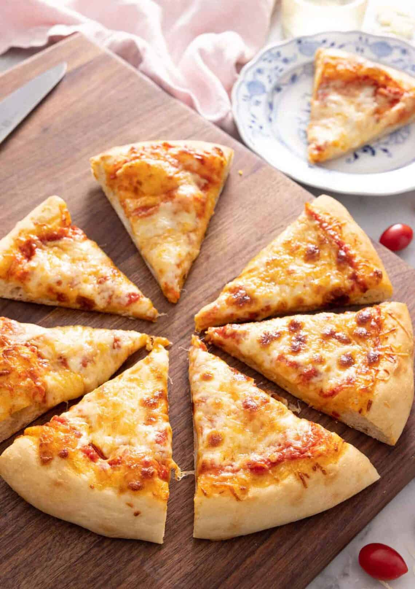

Cheese Pizza Recipe

Description
Sometimes all you want at the end of the day is a simple cheese pizza.
This recipe turns simple into sublime with the addition of an exceptional pizza dough, low-moisture mozzarella cheese, and an easy to make tomato sauce that hits all of the right sweet and savory notes to marry all of the flavors in this pie.
A simple garnish of fresh herbs, and you've got perfection on a plate.
Ingredients
- Pizza sauce
- Pizza dough
- Mozarella cheese
- Parmesan cheese
Steps
- On a lightly floured surface, stretch the dough into a 12-inch circle.
Transfer to a non-stick baking sheet.
- Spread the pizza sauce onto the dough, leaving a 1-inch border around the edge.
- Sprinkle with mozzarella.
- Sprinkle with parmesan before baking for 12 to 14 minutes, or until the crust is browned and the cheese is bubbling.